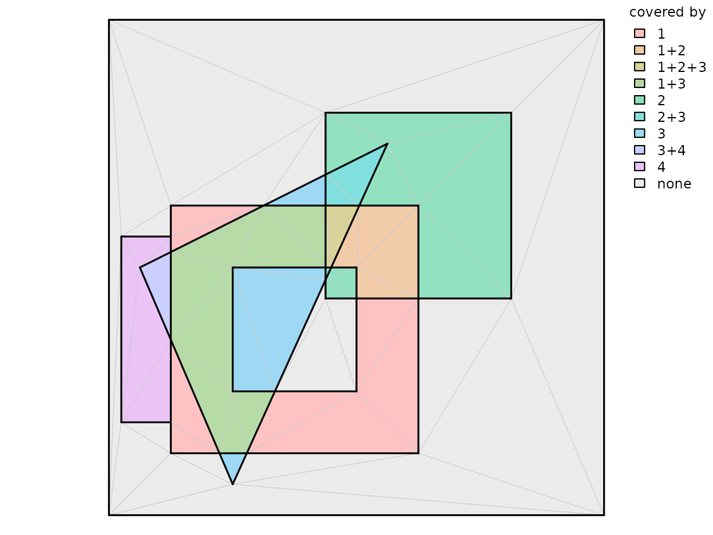

When polygons overlap, their boundaries cross, and the question is
usually not “is this triangle inside?” but “which of the inputs cover
this triangle?”. depth cannot answer that, because it
counts boundaries crossed on the way in, and boundaries from different
inputs are mixed together. edge_sources = TRUE keeps the
link between every edge of the mesh and the input segments that made it,
and with that the coverage of every triangle can be found by walking the
mesh.
Four overlapping inputs
Feature 1 is a square with a square hole, 2 is a square that overlaps its corner and part of the hole, 3 is a triangle across both, and 4 is a rectangle that shares part of the left edge of feature 1. Outer rings run counter-clockwise and holes run clockwise, so that an input’s winding number is 1 inside the feature and 0 outside, holes included.
rings <- list(
list(feature = 1, xy = rbind(c(0, 0), c(4, 0), c(4, 4), c(0, 4))),
list(feature = 1, xy = rbind(c(1, 1), c(1, 3), c(3, 3), c(3, 1))),
list(feature = 2, xy = rbind(c(2.5, 2.5), c(5.5, 2.5), c(5.5, 5.5), c(2.5, 5.5))),
list(feature = 3, xy = rbind(c(1, -0.5), c(3.5, 5), c(-0.5, 3))),
list(feature = 4, xy = rbind(c(-0.8, 0.5), c(0, 0.5), c(0, 3.5), c(-0.8, 3.5))),
## a frame around everything, feature 0, which is not an input to be counted
list(feature = 0, xy = rbind(c(-1, -1), c(7, -1), c(7, 7), c(-1, 7)))
)The frame gives the mesh an outside that is covered by nothing. Without it the mesh would only have the convex hull, which can be covered by an input.
Rings become vertices and segments, with an owner for
each segment recording its feature.
nv <- vapply(rings, function(r) nrow(r$xy), 1L)
first <- cumsum(c(0L, nv[-length(nv)]))
xy <- do.call(rbind, lapply(rings, `[[`, "xy"))
s0 <- unlist(lapply(seq_along(nv), function(k) first[k] + seq_len(nv[k])))
s1 <- unlist(lapply(seq_along(nv), function(k) first[k] + c(seq_len(nv[k])[-1], 1L)))
owner <- rep(vapply(rings, `[[`, 1, "feature"), nv)
length(s0)
#> [1] 23One triangulation for all of them
All the segments go in together. The crossings are found once, and become vertices of the mesh.
r <- cdt_triangulate(xy[, 1], xy[, 2], s0, s1, edge_sources = TRUE)
table(r$origin)
#>
#> input crossing steiner
#> 23 14 0
c(fixed_edges = nrow(r$S), triangles = nrow(r$T))
#> fixed_edges triangles
#> 52 68There are more fixed edges than input segments, since a segment is
split wherever it crosses another, or where another vertex lies on it.
The 14 vertices with origin "crossing" are those splits.
edge_sources has one row for every fixed edge and every
input segment covering it.
head(r$edge_sources)
#> edge segment forward
#> 1 1 13 TRUE
#> 2 2 15 TRUE
#> 3 3 13 FALSE
#> 4 4 6 TRUE
#> 5 5 5 TRUE
#> 6 6 11 TRUE
table(n_inputs = table(r$edge_sources$edge))
#> n_inputs
#> 1 2
#> 49 3edge is a row of S, segment is
the position of the input segment in s0 and
s1, and forward says whether the input runs
the same way as the S row. An edge covered by two input
segments has two rows. That is where the rectangle shares the left edge
of the first square. The two segments run in opposite directions, so one
is forward and the other is not.
Coverage by walking the mesh
Stepping from one triangle to its neighbour across an ordinary edge changes nothing. Stepping across a fixed edge changes the winding number of each input that covers it by plus or minus one, according to which way the input runs. Starting from a triangle in the frame, where every winding number is 0, the walk gives every triangle’s winding number for each feature.
cdt_winding() does this, using only the mesh and
edge_sources. It takes the feature of each input segment
(zero for the frame, which is not counted), and a point known to be
outside everything.
w <- cdt_winding(r, owner, outside = c(-0.9, -0.9))
anyNA(w)
#> [1] FALSE
head(w)
#> [,1] [,2] [,3] [,4]
#> [1,] 1 0 0 0
#> [2,] 1 0 1 0
#> [3,] 1 0 1 0
#> [4,] 0 1 0 0
#> [5,] 0 0 0 0
#> [6,] 0 0 0 0Row i of w is triangle i of
r$T, and column j is feature j.
The walk reaches every triangle, since the mesh is connected.
Checking it
Coverage is the winding number being non-zero. An independent check is a point-in-polygon test of each triangle’s centre, ring by ring.
centre <- function(r) {
cbind(rowMeans(matrix(r$P[t(r$T), 1], ncol = 3, byrow = TRUE)),
rowMeans(matrix(r$P[t(r$T), 2], ncol = 3, byrow = TRUE)))
}
inside_ring <- function(p, ring) {
j <- nrow(ring); inside <- rep(FALSE, nrow(p))
for (i in seq_len(nrow(ring))) {
cross <- ((ring[i, 2] > p[, 2]) != (ring[j, 2] > p[, 2])) &
(p[, 1] < (ring[j, 1] - ring[i, 1]) * (p[, 2] - ring[i, 2]) /
(ring[j, 2] - ring[i, 2]) + ring[i, 1])
inside <- xor(inside, cross); j <- i
}
inside
}
p <- centre(r)
truth <- sapply(1:4, function(f) {
inside <- rep(FALSE, nrow(p))
for (ring in rings) if (ring$feature == f) inside <- xor(inside, inside_ring(p, ring$xy))
inside
})
all((w != 0) == truth)
#> [1] TRUEThe two agree for every triangle. The test above needs a coordinate for every triangle and every ring, where the walk only needs the segments.
What depth cannot say
depth is still useful, but it is the number of
boundaries between a triangle and the outside, not the number of
features covering it. Here it is compared with the number of features
that do cover each triangle.
table(depth = r$depth, covered_by = rowSums(w != 0))
#> covered_by
#> depth 0 1 2 3
#> 1 20 0 0 0
#> 2 0 21 0 0
#> 3 3 0 15 0
#> 4 0 6 0 2
#> 5 0 0 1 0Depth 3 mixes triangles covered by no feature with triangles covered
by two. A triangle in the hole of feature 1, away from the other
features, is three boundaries in from the frame (the frame, the outer
ring of 1 and its hole) and is covered by nothing. A triangle in feature
1 that also lies in feature 2 is also three boundaries in, and is
covered twice. No function of depth can tell these apart,
while the walk can.
Pieces by the set of covering features
Triangles with the same set of covering features make an overlay piece. This is what an overlay or intersection of the inputs is made of.
set <- apply(w != 0, 1, function(i) paste(which(i), collapse = "+"))
set[set == ""] <- "none"
area <- function(r) {
a <- r$P[r$T[, 1], ]; b <- r$P[r$T[, 2], ]; c <- r$P[r$T[, 3], ]
0.5 * abs((b[, 1] - a[, 1]) * (c[, 2] - a[, 2]) - (c[, 1] - a[, 1]) * (b[, 2] - a[, 2]))
}
sort(round(tapply(area(r), set, sum), 3), decreasing = TRUE)
#> none 2 1 1+3 3 4 1+2 2+3 3+4 1+2+3
#> 39.976 6.468 5.328 4.672 2.624 2.046 1.682 0.532 0.354 0.318
sets <- sort(unique(set))
pal <- hcl.colors(length(sets), "Set 3", alpha = 0.8)
pal[sets == "none"] <- "grey92"
col <- pal[match(set, sets)]
tri <- t(cbind(r$T, NA))
op <- par(mar = c(0, 0, 0, 0))
plot(r$P, type = "n", asp = 1, axes = FALSE, xlab = "", ylab = "")
polygon(r$P[tri, 1], r$P[tri, 2], col = col, border = "grey80", lwd = 0.5)
segments(r$P[r$S[, 1], 1], r$P[r$S[, 1], 2], r$P[r$S[, 2], 1], r$P[r$S[, 2], 2], lwd = 1.5)
legend("topright", legend = sets, fill = pal,
cex = 0.7, bty = "n", title = "covered by")
par(op)Notes
The walk does not depend on the mesh being refined, so it works with
max_area and min_angle too, since
edge_sources follows each input through splits by
refinement. The tests check this against point-in-polygon with
refinement and conforming mode, and the areas covered do not change. The
polymer package does this at scale for polygon layers from any source,
and uses wkpool for the shared vertices.